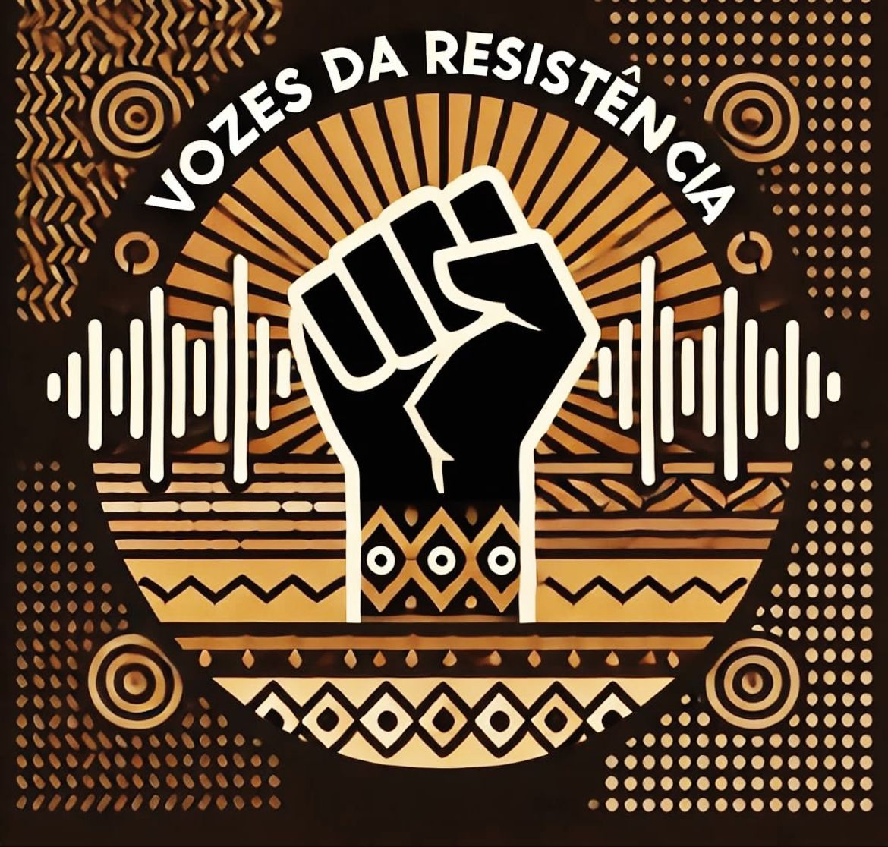
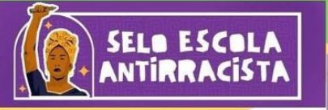

O desfile da consciência negra é um evento que funciona igualmente ao miss e mister EEP, mas ele tem seu diferencial que é promover a beleza negra da nossa instituição, ou seja, enfatizar a beleza de nossos alunos. E é um evento de extrema importância que ressalta nossas raizes, e principalmente nosso tom de pele, ressaltando também nossos traços étnicos e nossas características genéticas que fazem nossos alunos mais que especiais.
A nossa instituição conta com um selo antirracista, e é uma das EEPS mais premiadas do estado do Ceará e esse evento trás mais visibilidade para nossa instituição e é um evento muito importante para ser citado. E posteriormente eeses eventos podem trazer muitos aprendizados, sobre a cultura afro brasileira e suas características. O desfile da conciência negra foi fundado para promover nossa escola e conciêntizar nossos alunos de sua beleza, que fazem eles serem especiais, cada pessoa tem sua beleza, suas características e seu potencial e esse desfile não é diferente, ele promove principalmente a beleza negra de nossa escola.
